Joseph Norwood
Mechanical & Aerospace Engineer
About Me
Hello there! I'm Joseph, a Mechanical & Aerospace Engineering student at Princeton University. My engineering interests are primarily in the dynamics and locomotion of robotic systems, but I enjoy any engineering challenge that requires a novel solution. You'll also find me tearing up the jiu jitsu mats or running aimlessly outside. I love sharing what I've learned, so feel free to reach out!
Professional Experience
Student Assistant for Latin American Ephemera Collection
Princeton University
Work in the Firestone Library Collection Department receiving thousands
of ephemera from throughout Latin America, including the Library of Congress
in Rio de Janeiro, and upload their metadata to Princeton’s online Latin
American Ephemera (LAE) Collection.
▪ Detail-oriented processing of Spanish and Portuguese documents
▪ Import into and maintain an online databank
▪ Close collaboration with the Library Collection Specialist leading the LAE Collection
Undergraduate Researcher
Purdue University
2025 Summer Undergraduate Research Fellowship (SURF) and NSF Research Experiences for Undergraduates (REU) Student for the Internet of Things for Precision Agriculture (IoT4Ag) project within Purdue's Multi-Scale Robotics and Automation Lab.
▪ Conducted research under Professor David Cappelleri on a robotic platform for autonomous agricultural sensor deployment and monitoring
▪ Developed and proposed a deep learning-based visual servoing method for real-time robot motion control
▪ Collaborated with other IoT4Ag research labs to integrate complementary technologies into autonomous robotics, enhancing agricultural data collection and improving crop yield
▪ Gained hands-on experience in mechanical design, embedded systems, and field deployment strategies
Study Abroad Student
Princeton in Ishikawa
Selected for an 8-week, intensive Japanese language program hosted by the Ishikawa Prefectural Government and Princeton University.
▪ Attended daily language classes taught by Princeton professors and instructors from the Ishikawa Foundation for International Exchange
▪ Participated in cultural excursions, local workshops, and a homestay
▪ Strengthened advanced Japanese speaking, reading, writing, and listening skills
Intern at Casa Alitas
Catholic Community Services of Southern Arizona
Helped hundreds of asylum-seekers reach their sponsors in the US and guide them through the first steps of the immigration process.
▪ Explained immigration and flight procedures in Spanish & Portuguese
▪ Became a “Help Desk Lead” directing the portion of the shelter responsible for finding missing family
members, purchasing guests’ domestic transportation, and conducting time-restricted problem solving
Study Abroad Student
Princeton in Portugal
Completed a selective 4-week Portuguese language program, organized by Princeton University in partnership with CIAL (Centro de Iniciação e Aperfeiçoamento de Línguas).
▪ Attended daily immersive Portuguese classes taught by Princeton professors and CIAL instructors
▪ Participated in guided excursions and academic lectures focused on topics such as the Luso-African Diaspora, immigration, and cultural exchange
▪ Further developed advance Portuguese language skills in speaking, reading, writing, and listening

Missionary
The Church of Jesus Christ of Latter-day Saints
Served in the Nevada Las Vegas Mission & Brazil Piracicaba Mission.
▪ Oversaw groups of fellow missionaries in neighboring cities as a District Training Leader
▪ Taught families about Jesus Christ in Portuguese
▪ Meticulously planned each day into 30-minute increments
To learn more about my work experience, feel free to explore my LinkedIn profile .
Projects
Quadrotor
Ongoing (Est. Dec 2025)
I am taking MAE 345: Introduction to Robotics, where I am developing a quadrotor and implementing vision-based obstacle avoidance.
Space Mission Analysis and Planning
Ongoing (Est. Dec 2025)
As a part of MAE 341: Space Flight, I am working with a team to analyize and plan a mock space flight.
Senior Thesis - Robotic Hand
Ongoing (Est. May 2026)
I am working with a two other Seniors to develop a monolithic, compliant robotic hand under the guidance of Professor Anirudha Majumdar and Professor Daniel Nosenchuck.
Metadata Processing for Princeton Latin American Ephemera Collection
Ongoing (Est. May 2026)
For the past 3 years, I've been one of the main contributors to Princeton's Digital Archive of Latin American and Caribbean Ephemera. As of summer 2025, I have processed 2033 unique pieces of ephemera. This ongoing work requires Spanish and Portuguese proficiency and supports the continual expansion of the research database.
P-AgBot
Completed (Aug 2025)
 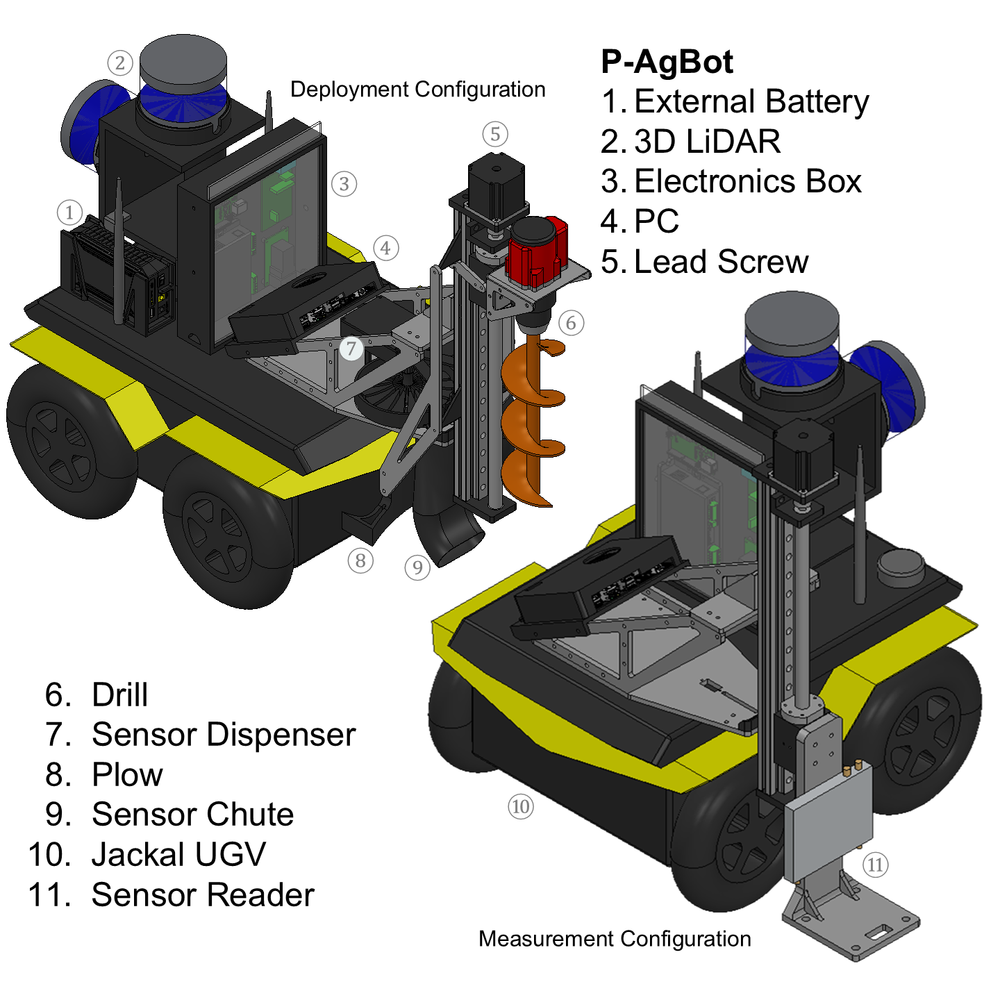
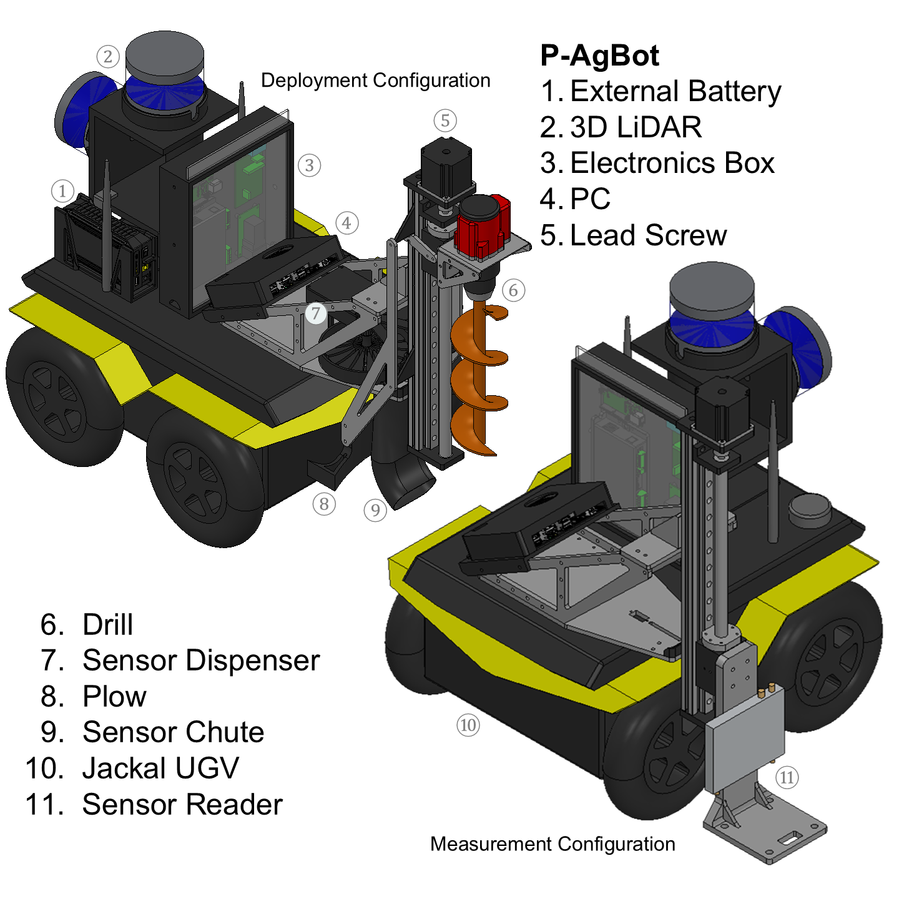

I worked in Purdue's Multi-Scale Robotics and Automation Lab with Professor Cappelleri to make a new configuration of P-AgBot, one designed for the autonomous deployment and monitoring of soil moisture sensors developed by the Internet of Things for Precision Agriculture (IoT4Ag) at the University of Pennsylvania. A robust mechanical and electrical system was created and a deep learning-based visual servoing method was developed for motion control. Look out for a paper that will be published at the start of 2026!
Search and Rescue Robot (SARR)
Completed (Dec 2024)


In MAE 322: Mechanical Design, I was apart of the team Doofenshmirtz Evil Inc. and designed a Search and Rescue Robot for the traversal of rough terrain, including a 8 foot long ramp, dogleg chute, and a 1 foot high wall, and the autonomous delivery of a 1 kilogram med kit. I was the team lead for the med kit delivery system and worked on every aspect of this robot. My team successfully navigated the whole course and delivered the med kit autonomously.
Optimized Airplane Wing
Completed (May 2024)
In MAE 321: Engineering Design, I was a part of the team that designed an optimized airplane wing. Within my team, I helped lead the CAD design in CREO Parametric. Our wing is primarily comprised of a specially designed I-beam and 8 bulkheads. During testing, our 1.33lb beam withstood 245lbs before breaking the test apparatus at 270lbs.
Princeton in Ishikawa T-Shirt
Completed (Jul 2024)
 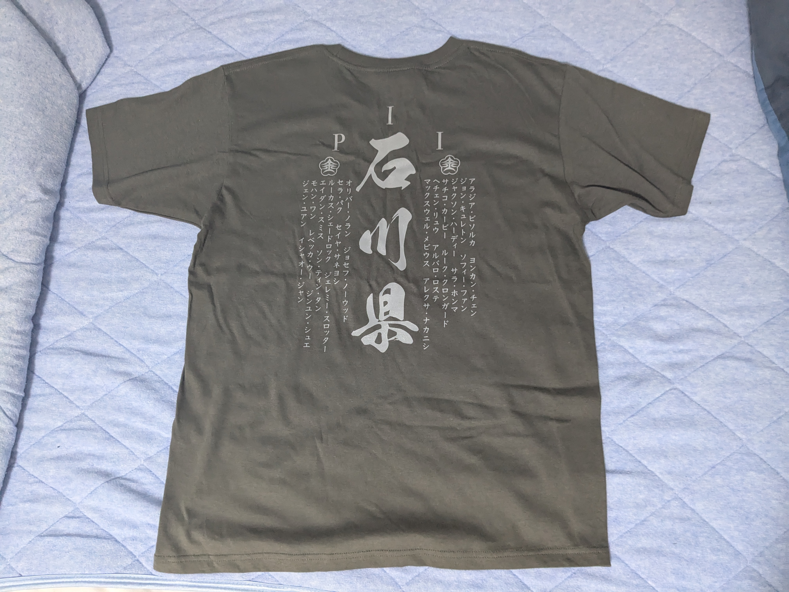
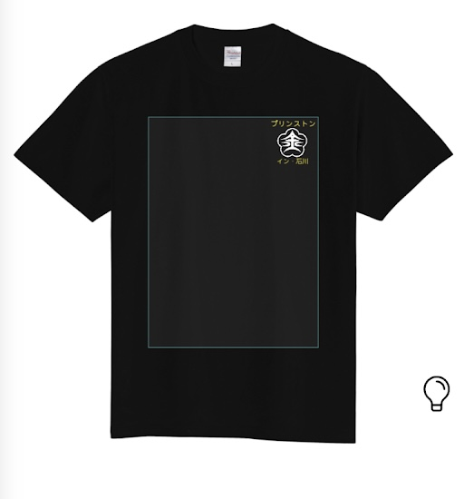
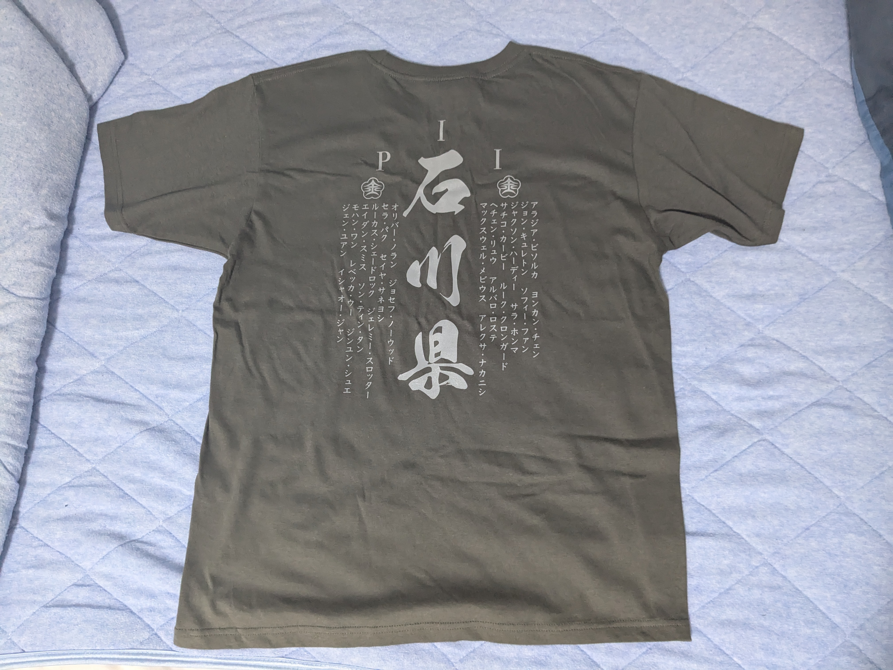
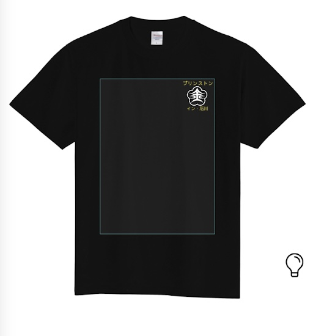
I designed a t-shirt for the Princeton in Ishikawa T-Shirt Design Contest. The back of my t-shirt ended up winning along with the front of my friend's t-shirt design. We then collaborated to create the final t-shirt design for the program.
Wind Turbine Blades
Completed (May 2024)
In MAE 224: Integrated Eng. Science Laboratory, I worked in a small team to design and perform an experiment analyzing the relation between the coefficient of performance of wind turbines and the number of turbine blades. This experiment was performed in a small wind tunnel using different 3d printed turbine blades.
Princeton Mechanical & Aerospace Engineering T-Shirt Design
Completed (Nov 2024)
I designed a t-shirt for Princeton's Mechanical & Aerospace Engineering Department T-Shirt Competition using vector graphics. The original design was made for the 2023 competition before being updated for the 2024 competition. The Terminator-themed design seeks to highlight the themes of robotics and innovation, while simultaneously highlighting the responsibility engineers have to consider the ethical and societal impacts of their innovations. It also just looks cool!
Self-Balancing Inverted Pendulum
Completed (Dec 2024)
In MAE 433: Automatic Control Systems, I designed a control scheme to create a self-balancing pendulum.
1954 Triumph Tiger Cub Restoration
Completed (May 2023)
 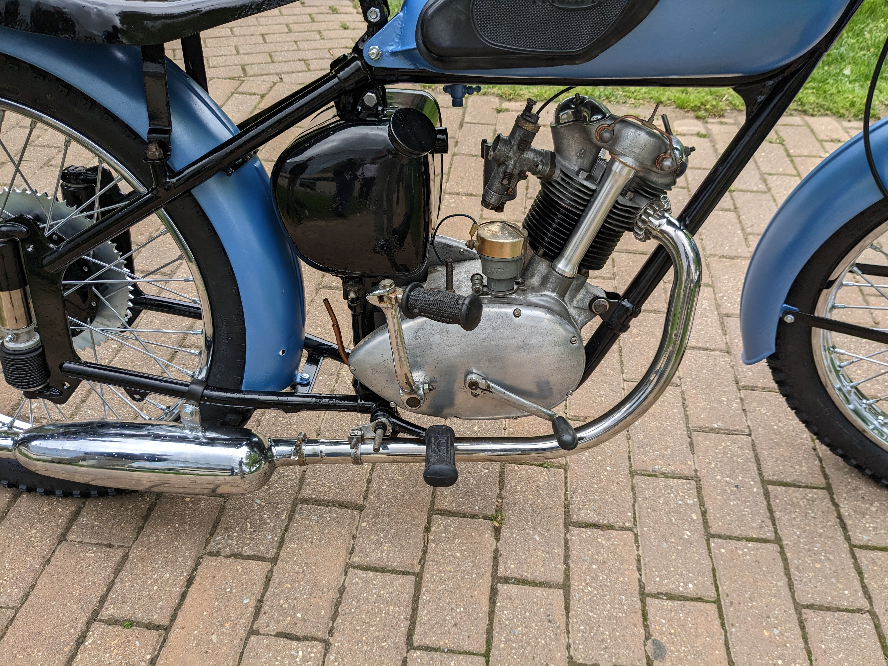
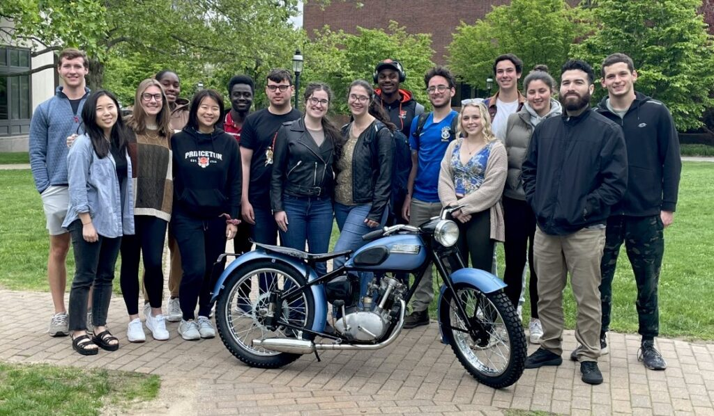
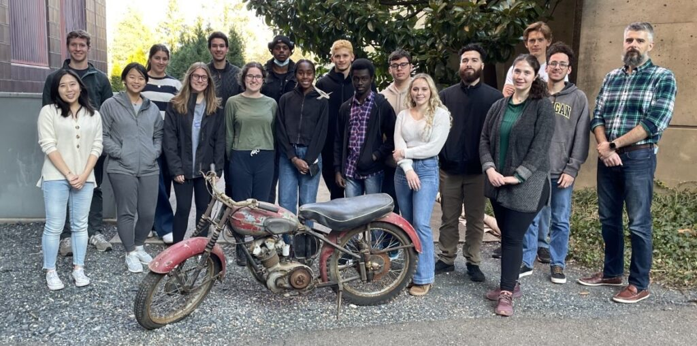
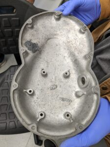
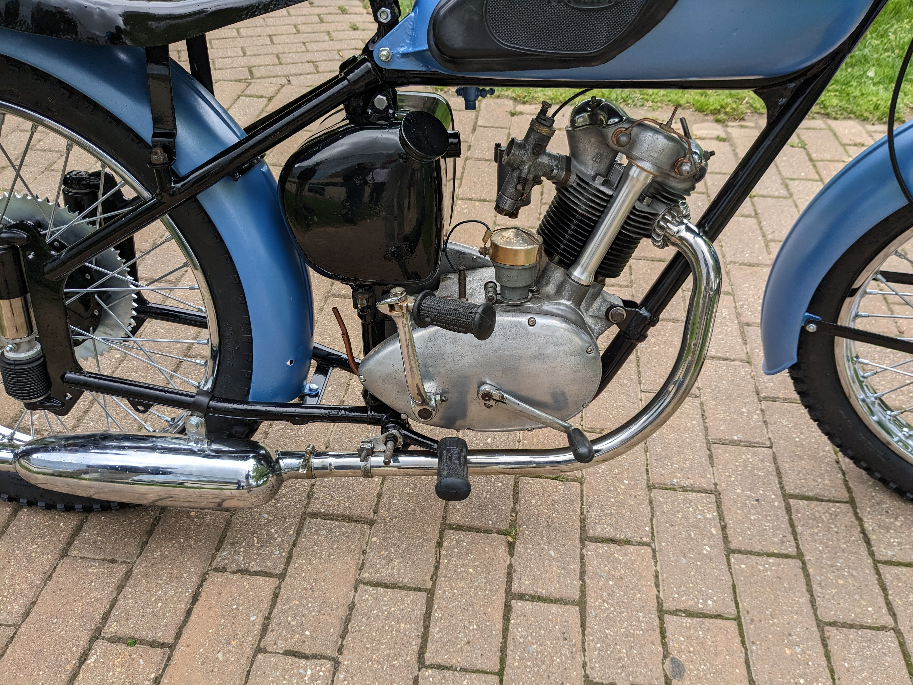
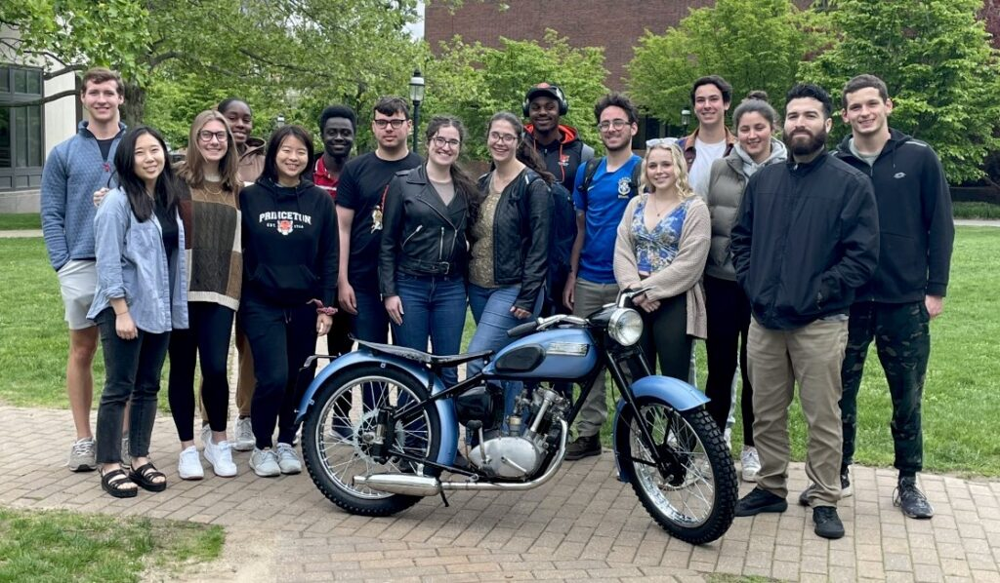
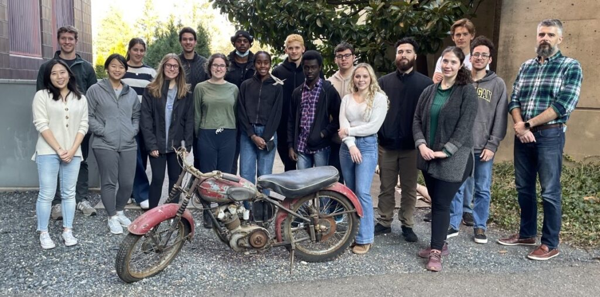
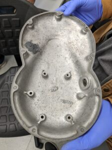
In FRS 106: Art and Science of Motorcycle Design, I restored a 1954 Triumph Tiger Cub to working condition. In this project, I led the team in charge of the restoration of the bottom end of the engine. This specific portion of the project required a lot of cleaning and required me to design a way to take use an old scanner to make vectorized images for making custom gaskets. This method was documented in an internal guide to allow future classes to replicate this process. The whole project is documented on this website . This project also inspired me to get my motorcycle license.
VTuber Model Design and Setup
Completed (Dec 2024)
The final project of JPN 301: Advanced Japanese 1 was to research a topic in Japanese, while collaborating with students from the University of Tokyo. My group's research topic was autonomous driving. This project ended with the creation of a simple video that was supposed to just have slides and the voiceover of all the Princeton students involved in the project. I decided it would be fun to make a VTuber model of myself to help people stay engaged!
Entertainment Stand
Completed (May 2024)
I designed an affordable, minimalist entertainment stand partially inspired by sashimono, a type of Japanese woodworking that relies on intricate, interlocking wooden joints. 3D printable cabe guides were also designed for clean cable management.
LaTeX DnD Character Sheet
Completed (Aug 2025)
Fed up with DnD Beyond, I found a broken 5 year old OverLeaf template for a DnD character sheet and fixed it to create a custom LaTeX DnD character sheet for my barbarian/warlock multiclass.
Personal Portfolio Website
Ongoing (Est. Aug 2025)
I programmed this website using html.
Conferences and Presentations
Purdue SURF Research Symposium
Jul 2025


I presented my summer work on P-AgBot to judges and the public at the SURF Undergraduate Research Symposium.
U.S. NSF Internet of Things for Precision Agriculture (IoT4Ag) 2025 Annual Retreat
Jun 2025
I participated in the 2025 NSF IoT4Ag Annual Retreat at the University of Pennsylvania alongside faculty, students, postdocs, and industry partners to exchange ideas on advancing agricultural technology. This event featured 47 flash talks, a Shark Tank competition, a keynote from the President of the American Mushroom Institute, a field tour of the South Mills Champs mushroom facilities, and breakout sessions on nitrogen sensing, water efficiency, and pest resilience.
プリンストン大学日本語科スピーチコンテストの司会と発表者
May 2025
The Japanese Language Program Speech Contest normally has a 1st year student and a 3rd year student as the Master of Ceremonies (MC). I was chosen to be the 3rd year MC for the 2025 Competition. My speech was also chosen of all the 3rd year speeches to be presented at the contest. There are over 250 people affiliated with the Japanese language program each year. For this competition, I conducted the whole competition in Japanese as well as gave my 5 minute long Japanese speech about thrift shopping to a panel of judges, public attendees, teachers, and my fellow Japanese students. More information about this contest is available here .
2024 LDSSA Ivy Conference
Nov 2024
I attended the 2024 Latter-day Saints Student Association Conference at Dartmouth. This 3-day conference featured a variety of networking activites, service projects, and devotionals, bringing together students across the Ivy Leagues.
Kanazawa University International Exchange Speech
Jun 2024
At a International Student Exchange Event at Kanazawa University, I was selected from the students participating in the Princeton In Ishikawa (PII) program to give a presentation in Japanese about my experiences at Princeton and in Kanazawa thus far. It was awesome meeting so many new people! Read more about it here .
Traz d'horizonte: Impressions from Cabo Verde Exhibition
Oct 2023
 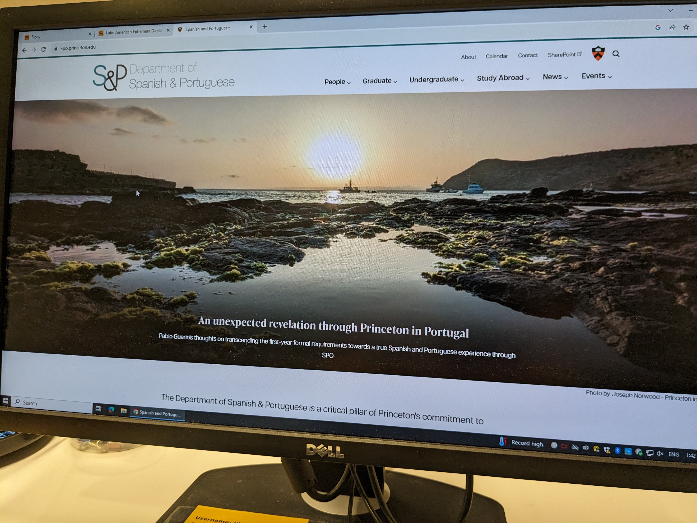
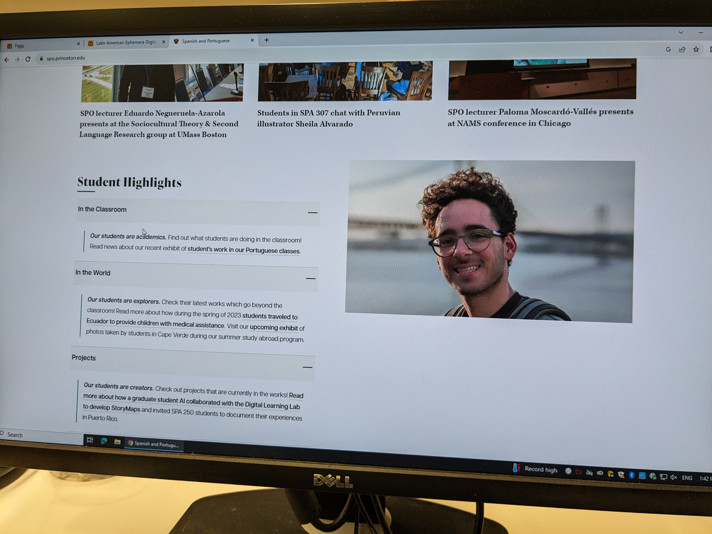
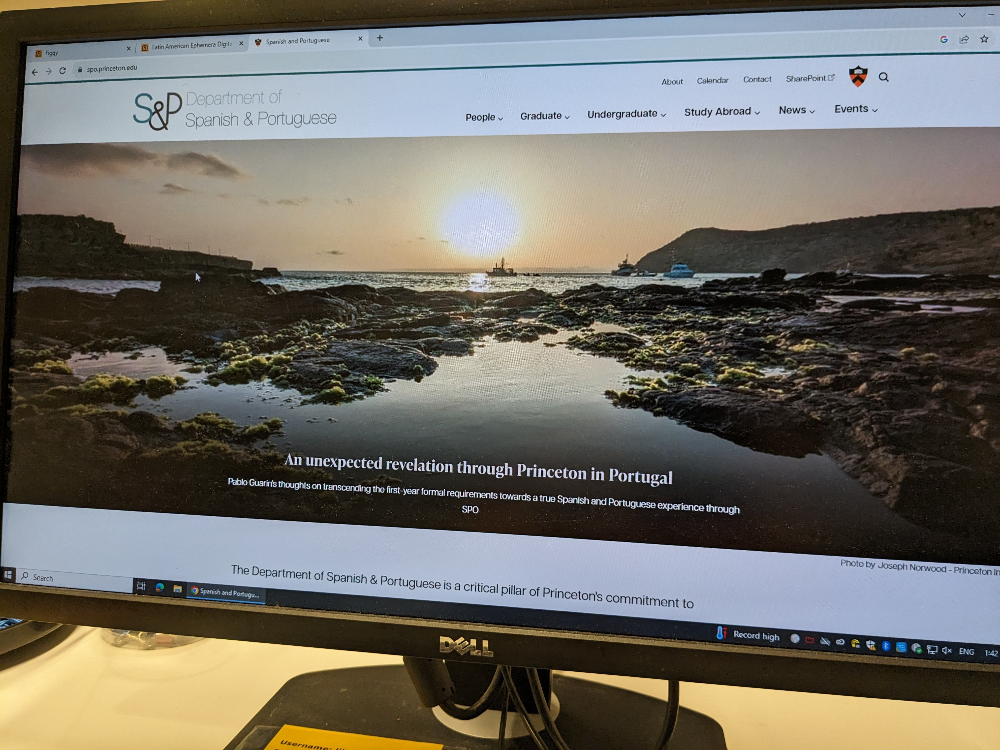
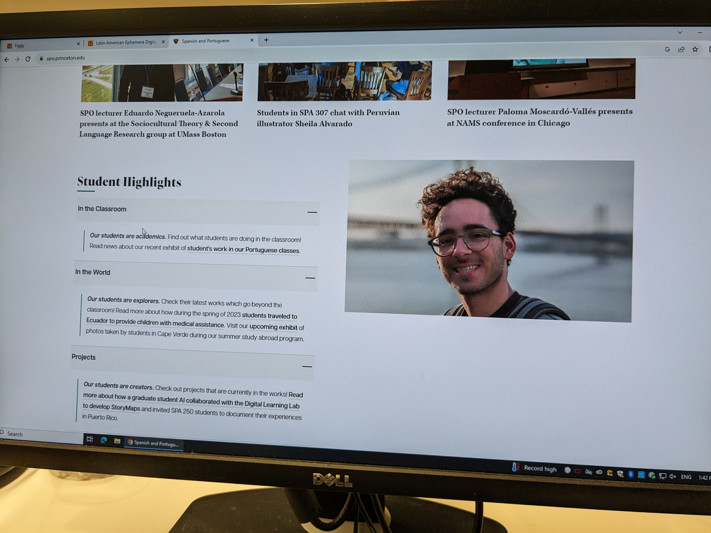
A picture I took of a Cape Verde sunset during Princeton in Portugal was featured in this Exhibition and was also featured on the front page of the Spanish & Portuguese (SPO) Department website (along with a picture of my face).
2023 LDSSA Ivy Conference
Oct 2023


I attended the 2023 Latter-day Saints Student Association Conference at Harvard. This 3-day conference featured a variety of networking activites, service projects, and devotionals, bringing together students across the Ivy Leagues.
Princeton in the Portuguese-speaking World Exhibit
Apr 2023

 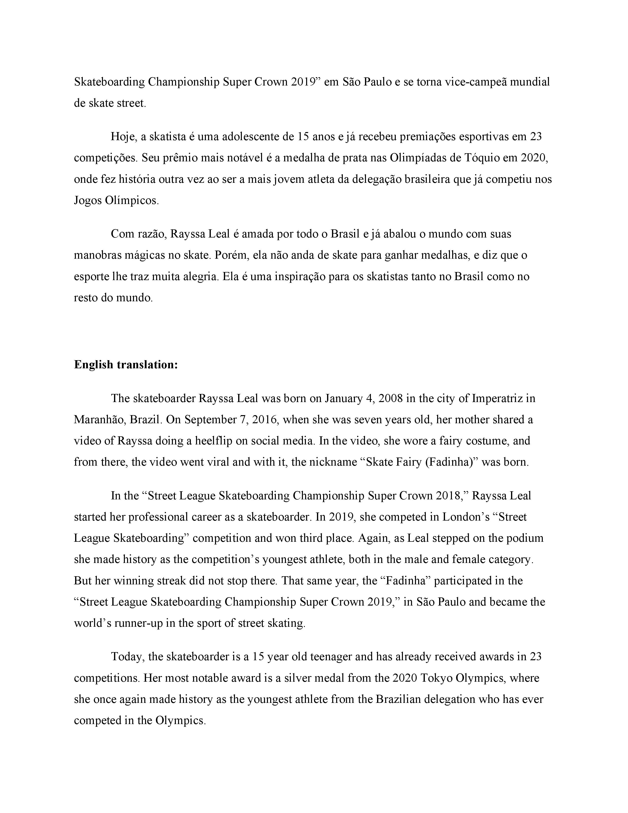
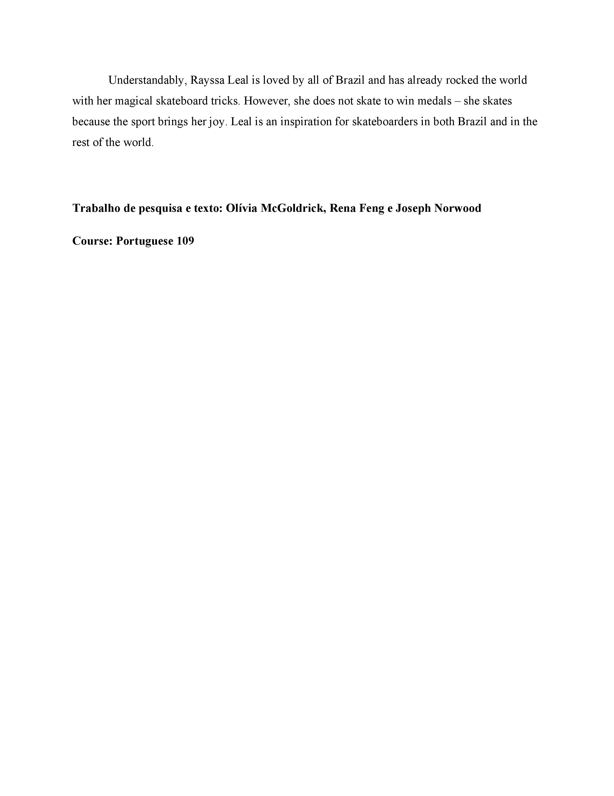
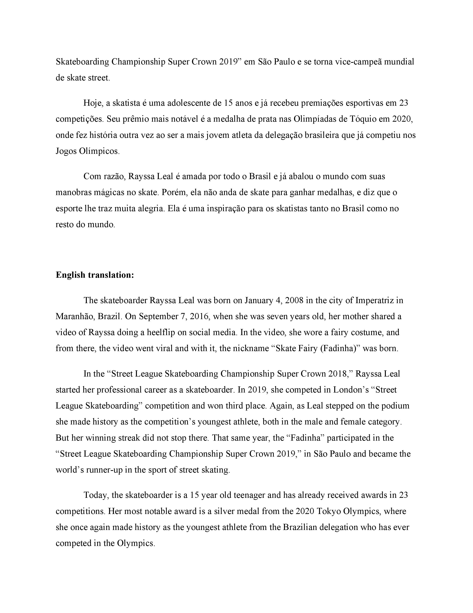
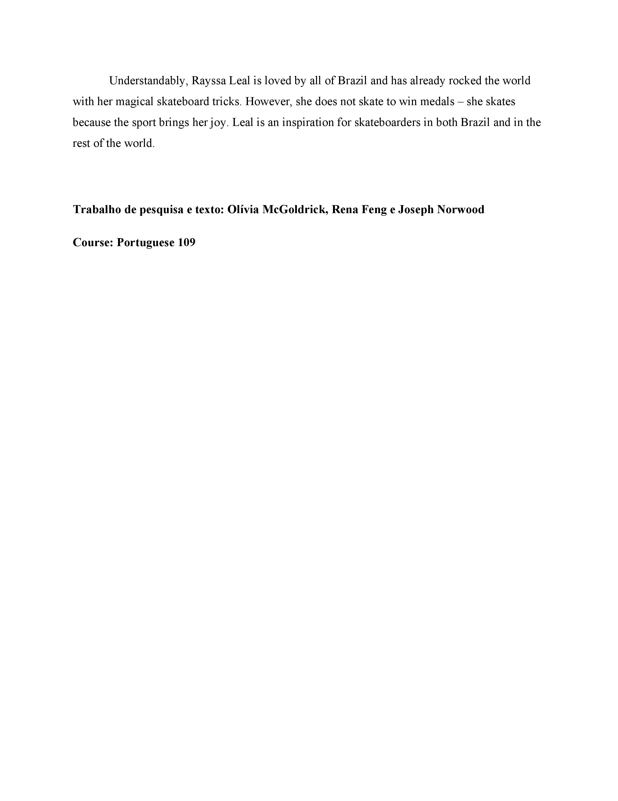
In POR 109, I researched a famous Portuguese-speaker and made a poster alongside two of my fellow students that was presented in the Princeton in the Portuguese-speaking World Exhibit.
Princeton Learning and Education through Service (LENS) Internship Showcase
Mar 2023
I presented my summer internship at Casa Alitas, a humanitarian aid center for asylum seekers.
Clubs
Princeton Electric Speedboating (PES)
2023 - Present
I am a Mechanical Engineer for PES working mostly with the electric boats for the Promoting Electric Propulsion (PEP) Competition each year. I have worked on the outboard and cowling for the 2025 PEP Planing Crewed and Uncrewed Electric Speed Boat. I've also helped with general maintanance of the World Record Holding Big Bird in preparation for and during the 2024 PEP Competition. PES also does community outreach as seen with our participation in I'm excited for the 2026 competition and am ready to give it my all to help break the Electric Boat Speed Record again with Eagle 1!
PES (PEP competition, Stem to Stern participation), PBJJ (BJJ competitions), LDSSA (Has conferences), Princeton Camerata, Japanese Language Table
Awards
Contact
Email: joseph.norwood@princeton.edu
GitHub: @norwooj